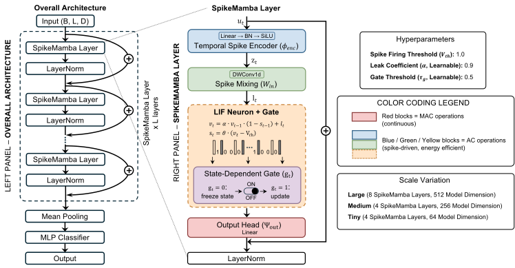
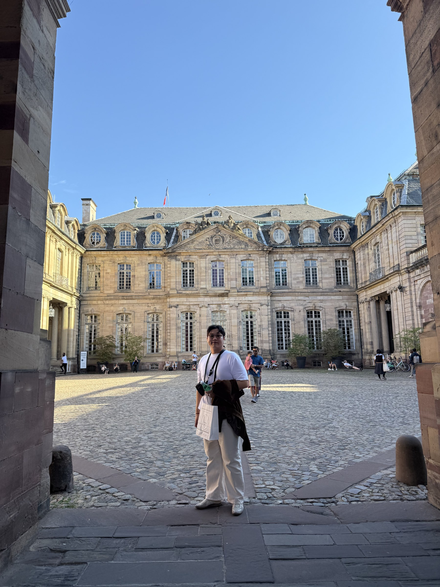
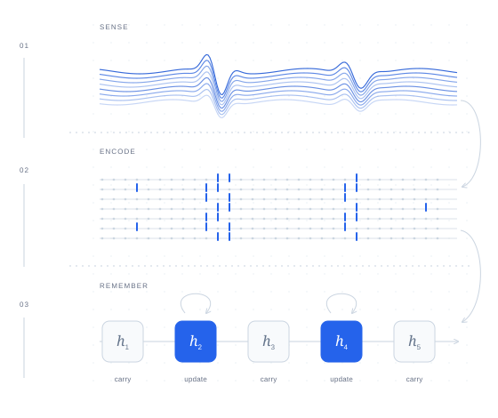

SpikeMamba
Spike-Driven State Space Models for Energy-Efficient Biomedical Sequence Modeling
Recasting selective state space dynamics as sparse, spike-driven updates for ECG and EEG analysis.
Ph.D. student · Stony Brook University
Efficient intelligence,
inspired by the brain.
I study how sparse events can power intelligent systems — from spiking neural networks to efficient sequence models and neuromorphic hardware.

01 / About

I am a Ph.D. student in Computer Science at Stony Brook University, advised by Prof. Yoon Seok Yang in the Brain-Inspired Computing Lab.
My research connects neuromorphic computing and machine learning. I build spiking neural networks and state space models that use sparse, event-driven computation, with a particular interest in biomedical signals and practical on-device deployment.
Previously, I earned my M.S. in Computer Science and Engineering at Chungnam National University, advised by Prof. Hyungshin Kim. I am also a co-founder and Principal Software Engineer at MindSyn.
02 / Research
Selected work in efficient learning,
biomedical AI, and neuromorphic computing.

Spike-Driven State Space Models for Energy-Efficient Biomedical Sequence Modeling
Recasting selective state space dynamics as sparse, spike-driven updates for ECG and EEG analysis.
Allocating transition computation at selected events, with fixed-size associative storage for recall.
An integer spike pipeline connecting parallel training with bit-exact sequential execution on neuromorphic hardware.
03 / Background
Aug 2024 — Present
Ph.D. in Computer Science
Advisor: Yoon Seok Yang
Aug 2024
M.S. in Computer Science and Engineering
Advisor: Hyungshin Kim
Feb 2022
B.S. in Environmental Biotechnology
May 2026 — Present
Co-founder · Principal Software Engineer
Aug 2024 — Present
Full-time Research Assistant
Jun 2022 — Mar 2024
Software & AI Engineer
Teaching
Teaching Assistant, Stony Brook University
CSE320 & CSE416 · Aug–Dec 2025
04 / Connect
Interested in efficient learning or neuromorphic computing?
I’d be happy to talk research.